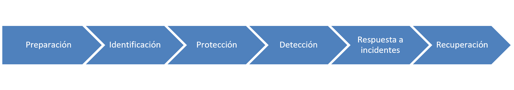

Respuesta a Incidentes
Objetivo
El estudiante identifica las fases y actividades de un plan de respuesta a incidentes mediante la ejecución de estas en un entorno de laboratorio controlado con la intención de proteger la información de una organización.
Descripción
En esta actividad resolveras un escenario práctico en el servidor ficticio de una empresa ficticia llamada Nexus Soluciones Logísticas. Usando la máquina virtual que descargaste, vas a ejecutar el proceso de respuesta a incidentes paso a paso: ubicarás las acciones del atacante en el sistema, mitigarás el impacto del ataque y aplicarás las correcciones necesarias para restablecer la seguridad del servidor.
 Sección Teórica
Sección Teórica
¿Qué es la respuesta a incidentes?
De acuerdo con el Joint Task Force on Cybersecurity Education, la Respuesta a Incidentes (RI por sus siglas en español) se refiere a las acciones tomadas por la alta dirección para especificar los procesos y procedimientos de la organización que anticipan, detectan y mitigan los efectos de un incidente (JTF, 2017, p. 66).
Un incidente de ciberseguridad es un evento que se ha determinado el cual tiene un impacto en la organización y genera la necesidad de respuesta y recuperación (National Institute of Standards and Technology [NIST], 2018)
En la ilustración 1, se muestra el flujo de una respuesta a incidentes de forma general:

Etapas
A continuación se desglosan cada una de las etapas de la respuesta a incidentes:
Preparación
Prepararse antes de que ocurra un incidente es importante para mitigar cualquier impacto en la organización. Las actividades clave que la componen son los siguientes:
- Documentación de políticas y procedimientos: documentar y comprender las políticas y procedimientos estándar para la respuesta a incidentes.
- Instrumentación del entorno: implementar herramientas y mecanismos de monitoreo para detectar actividad sospechosa y maliciosa de manera oportuna.
- Plan del personal: establecer planes para todo el personal, definiendo roles, responsabilidades y cadenas de mando claras.
- Educación y concientización: capacitar a los usuarios finales sobre las ciberamenazas actuales y los procedimientos adecuados para la notificación de incidentes.
- Inteligencia de amenazas (CTI): aprovechar la inteligencia de amenazas cibernéticas (Cyber Threat Intelligence) para identificar de forma proactiva posibles actividades maliciosas antes de que impacten a una organización.
Por otro lado, es importante definir las líneas base de sistemas y redes antes de que ocurra un incidente para comprender los parámetros de la actividad “normal”. Establecer estas líneas base permite a los equipos de defensa identificar falsos positivos y verdaderos negativos con mayor rapidez.
La preparación también incluye:
- Contar con la infraestructura adecuada para gestionar incidentes complejos.
- Desarrollar y probar continuamente cursos de acción específicos para la contención y erradicación de amenazas.
- Establecer medios seguros y confiables para la recolección de evidencia y análisis forense digital.
Identificación
La identificación es el desarrollo de la comprensión organizativa necesaria para gestionar el riesgo de ciberseguridad en sistemas, activos, datos y capacidades.
Las actividades comprendidas dentro de esta etapa son fundamentales para comprender el contexto del negocio, los recursos que dan soporte a las funciones críticas y los riesgos de ciberseguridad asociados, permite a la organización enfocar y priorizar sus esfuerzos de manera alineada con su estrategia y sus necesidades operativas.
Algunos factores claves incluyen:
- Gestión de activos: identificación y control de los datos, personal, dispositivos, sistemas e instalaciones que permiten a la organización alcanzar sus fines operativos.
- Entorno de negocio: comprensión de la misión, objetivos, partes interesadas y actividades de la organización para priorizar los esfuerzos de ciberseguridad.
- Gobernanza: políticas, procedimientos y estructuras para monitorear los requisitos legales, reglamentarios, operativos y de riesgo de la organización.
- Evaluación de riesgos: comprensión del riesgo de ciberseguridad para las operaciones organizaciones, los activos y los individuos.
- Estrategia de gestión de riesgos: establecimiento de las prioridades limitaciones, tolerancia al riesgo y suposiciones operativas de la organización.
Protección
Las acciones pertinentes para esta etapa son desarrollar e implementar las salvaguardas adecuadas para garantizar la prestación de servicios de infraestructura crítica.
La función de protección respalda la capacidad de limitar o contener el impacto de un potencial evento de ciberseguridad mediante la implementación de recursos y estrategias para garantizar la prestación de servicios críticos.
Dentro de esta se incluyen ciertos puntos:
- Gestión de identidades y control de acceso: limitar el acceso físico y lógico a activos y redes únicamente a usuarios, procesos y dispositivos autorizados.
- Concientización y capacitación: asegurar que el personal y los socios reciban educación y formación sobre ciberseguridad para desempeñar sus funciones de forma segura.
- Seguridad de los datos: proteger la confidencialidad, integridad y disponibilidad de la información tanto en tránsito como en reposo.
- Procesos y procedimientos de protección de la información: mantenimiento y gestión de políticas de seguridad, procesos operativos y controles para proteger los sistemas y datos.
- Mantenimiento: realizar el mantenimiento y las reparaciones de los activos de sistemas de información con los controles de seguridad adecuados.
Detección
Mediante la detección se desarrollan e implementan las actividades adecuadas para identificar la ocurrencia de un evento de ciberseguridad.
El objetivo de esta fase es determinar si ha ocurrido un incidente de ciberseguridad, así como evaluar su tipo, alcance e impacto. Para ello, es indispensable comparar la actividad del entorno frente a una base línea del comportamiento normal.
Actividades principales de la detección:
- Identificar actividad anómala: detectar desviaciones en la red y el uso sospechoso de herramientas legitimas del sistema.
- Recolectar indicadores de compromiso (IOC): documentar artefactos e información técnica de la amenaza para orientar las búsquedas de ciberamenazas.
- Ajustar herramientas de monitoreo: actualizar reglas, firmas y controles de detección a medida que se identifican las Tácticas, Técnicas y Procedimientos (TTPs) del atacante.
- Refinar el alcance: utilizar los datos obtenidos para descubrir de forma continua otros sistemas o cuentas potencialmente impactadas.
Preguntas clave de evaluación
Durante la detección, el equipo de respuesta debe responder rápidamente a:
- Acceso e Impacto: ¿Cuál fue el vector de ataque inicial y que vulnerabilidades o cuentas se explotaron?
- Persistencia y control: ¿Cómo mantiene el atacante el comando y control (C2) y la presencia en el sistema?
- Movimiento y exfiltración: ¿Existe movimiento lateral dentro de la red o evidencia de exfiltración de datos?
Fuentes principales de registros
| Táctica | Fuentes de monitoreo clave | Indicadores comunes |
|---|---|---|
| Acceso Inicial / Ejecución | Email, Proxy Web, EDR, Sysmon, Eventos de Windows | Phishing, web Shell, ejecución anómala de scripts o Power Shell. |
| Persistencia / Credenciales | Registros de autenticación, controlador de dominio, registro. | Tareas programadas no autorizadas, lecturas en memoria (LSASS), elevación de privilegios. |
| Movimiento / C2 / Exfiltración | Firewall, DNS, IDS/IPS, Registros de red interna y nube. | Trafico saliente anómalo, dominio/IPs de C2s, conexiones Workstation-to-workstation. |
Respuesta a Incidentes
Esta etapa busca desarrollar e implementar las actividades adecuadas para tomar medidas ante un evento de ciberseguridad detectado. Esta función respalda la capacidad de contener el impacto de un evento adverso con los siguientes puntos clave:
- Planificación de la respuesta: ejecución de los procesos y procedimientos de respuesta durante y después de un incidente.
- Comunicaciones: coordinación con las partes interesadas internas y externas (usuarios, directivos, autoridades o proveedores de servicios).
- Análisis: examen profundo de las evidencias para comprender la magnitud del incidente y respaldar las acciones de respuesta.
- Mitigación: ejecución de acciones inmediatas para contener el incidente, erradicar la amenaza y mitigar el impacto.
- Mejoras: evaluación de las lecciones aprendidas para actualizar e impulsar la mejora continua de las actividades de respuesta.
Recuperación
Finalmente, se busca desarrollar e implementar las actividades adecuadas para mantener los planes de resiliencia y restablecer cualquier capacidad o servicio que se haya visto afectado a raíz de un incidente de ciberseguridad. Esto ayuda a respaldar el retorno oportuno a las operaciones normales que reducen el impacto global del evento. Los puntos clave para esto son:
- Planificación de la recuperación: ejecución de procesos y procedimientos para la restauración oportuna de los sistemas y servicios afectados.
- Mejoras: actualización de la estrategia y los planes recuperación basándose en las lecciones aprendidas y los desafíos enfrentados.
- Comunicaciones: coordinación y gestión de la comunicación con las partes interesadas internas y externas durante el proceso de restauración de servicios.
Frameworks de respuesta a incidentes
A continuación, se presentan algunos marcos de referencia y documentos especializados que permitiran complementar los conocimientos sobre la respuesta a incidentes.
NIST SP 800-61 Rev. 3
Publicación del National Institute of Standards and Technology (NIST) que proporciona recomendaciones para integrar la respuesta a incidentes en la gestión de riesgos de ciberseguridad, tomando como referencia el Cybersecurity Framework 2.0.
Consultar documentoCISA Cybersecurity Incident & Vulnerability Response Playbooks
Guías publicadas por la Cybersecurity and Infrastructure Security Agency (CISA), que describen procedimientos operativos para planificar y ejecutar actividades de respuesta ante incidentes y vulnerabilidades de ciberseguridad.
Consultar documentoFIRST CSIRT Services Framework
Marco de referencia desarrollado por el Forum of Incident Response and Security Teams (FIRST), que organiza y describe los servicios y funciones que pueden ofrecer los equipos de respuesta a incidentes de seguridad informática (CSIRT).
Consultar documentoPráctica
Nexus Soluciones Logísticas, S.A. de C.V. es una empresa dedicada al almacenamiento, control de inventario y distribución dentro de la cadena de suministro a nivel regional. Para optimizar sus procesos operativos y la gestión documental interna, la organización opera un servidor web que aloja el Sistema de Gestión Documental Interno (SGDI), un portal utilizado por el personal administrativo para la carga de facturas, manifiestos y reportes operativos.
El pasado 23 de octubre de 2026, el Centro de Operaciones de Seguridad (SOC) de la empresa detectó anomalías en el tráfico de red del servidor que aloja el portal web. Se identificaron salidas de datos durante la madrugada y conexiones persistentes hacia dominios externos no autorizadas. Ante la sospecha de una intrusión en curso y un posible compromiso de la información corporativa, el departamento de TI procedió a notificar al departamento de respuesta a incidentes para realizar el proceso adecuado.
Instrucciones
A continuación se anexa una imagen virtual del servidor comprometido, donde el alumno debe ejecutar el proceso de respuesta a incidentes que se mencionó en la sección teórica.
 Máquina virtual: IR-Nexus-Incident.ova - Tamaño: 450 MB
Máquina virtual: IR-Nexus-Incident.ova - Tamaño: 450 MB
Evaluación
| Criterios | Excelente (Cumple con el rigor técnico) - 10 pts. | Regular (Parcial / Incompleto) – 5 pts. | Insuficiente / No presentado – 0 pts. | Puntaje total |
|---|---|---|---|---|
| Identifica la dirección IP del atacante cuando se subió el archivo malicioso al servidor. | ||||
| Localiza el nombre del archivo malicioso. | ||||
| Identifica las acciones de reconocimiento local realizadas por el atacante. | ||||
| Identifica los cambios realizados en el sistema operativo. | ||||
| Localiza el contenido temporal con la información comprometida y exfiltrada. | ||||
| Identifica el método utilizado para exfiltrar información, así como el destino. | ||||
| Presenta una cronología coherente y secuencial que conecta todo el flujo del ataque. | ||||
| Presenta un plan de recuperación adecuado para la continuación del plan de negocios. | ||||
| Explica soluciones para corregir la vulnerabilidad aprovechada para realizar el ataque. | ||||
| Implementa las soluciones anteriores mostrando el funcionamiento de estas. |
Nota: las evidencias serán subidas a la plataforma Eminus 4 en la actividad "Respuesta a Incidentes".